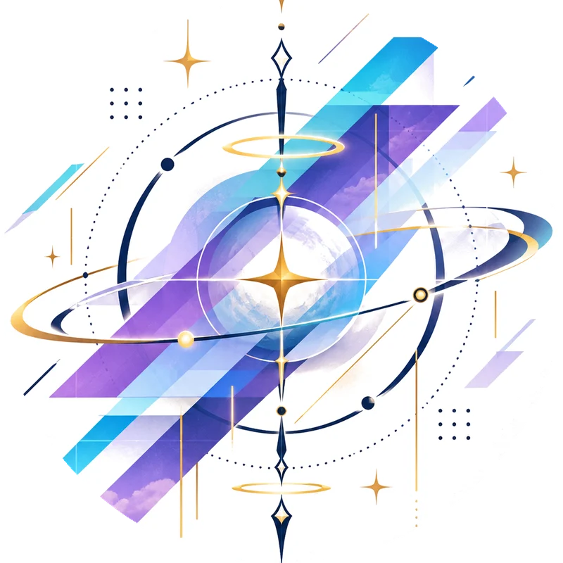
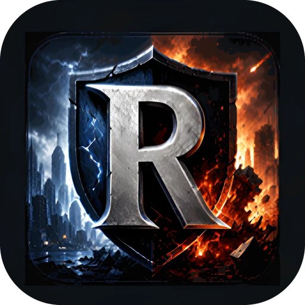

新潟工科大学 工学部 工学科 都市防災コース
Ready or Lab 代表
川又 星桜
Shion Kawamata
大学では、主に土木と防災を学んでいます。「遊びながら防災を学べる」をコンセプトにしたカードゲーム「Ready or Not」を企画・開発し、Google Play で公開しています。
NOWいま取り組んでいること
遊びながら防災を学べる
Ready or Not ／ サークル Ready or Lab
備える・配る・諦める。防災の判断を何度でも試し、その結果を数分で受け取れる対戦型のカードゲームです。企画から開発、公開までを、サークル Ready or Lab で進めています。


地域企業の困りごとを支援する
CO-LAB NIIGATA（新潟県）
学生チームが地域企業の実際の課題に入り込み、調査・検証・提案を行い、提案のその先までやりきる実践型プログラムです。県内の企業とともに、若手の採用と業務の効率化に取り組んでいます。
祭りの文化を次世代へ
八坂祇園會 実践型インターンシップ
柏崎八坂神社は、ぎおん柏崎まつりの発祥の神社です。1950年に神社の祇園祭と商工祭が一つになり、今のまつりが生まれました。八坂祇園會は、その祭りの文化を神社から受け継ぐ取り組みで、柏崎の地域コーディネーターが企画し、学生チームが実践型インターンシップとして加わっています。1年目は当日の運営に、2年目はそれに加えて縁日と広報の企画にも関わりました。
HISTORYこれまでの活動
2026
- 10月Niigata Startup Round に参加
- 09月ビジネスアイデアコンテスト Open Gate NIIGATA 2026 に出場
- 08月Ready or Not を Google Play で公開
- 08月CO-LAB NIIGATA に参加
- 07月DXハッカソンに参加
- 07月八坂祇園會 実践型インターンシップ（2年目）
- 06月サークル Ready or Lab を設立し、代表に
- 02月日本都市計画学会 都市構造評価特別委員会賞を受賞
2025
- 07月八坂祇園會 実践型インターンシップ（1年目）
AWARD受賞
日本都市計画学会 都市構造評価特別委員会賞
「労働力」から「生活者」へ ― 新潟市・聖籠町の産業相関と外国人居住環境の分析による広域連携型定住モデルの提案
LICENSE資格
土木・建設
- 1級土木施工管理技士補
情報
- AWS Certified Solutions Architect – Associate
- 応用情報技術者
- 基本情報技術者
品質管理
- QC検定 2級
不動産・法規
- 宅地建物取引士試験 合格